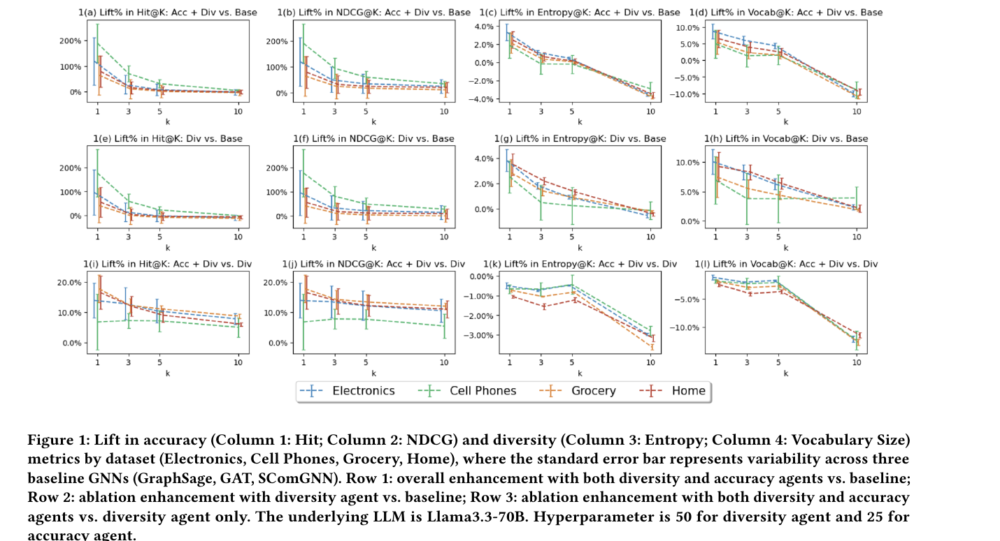
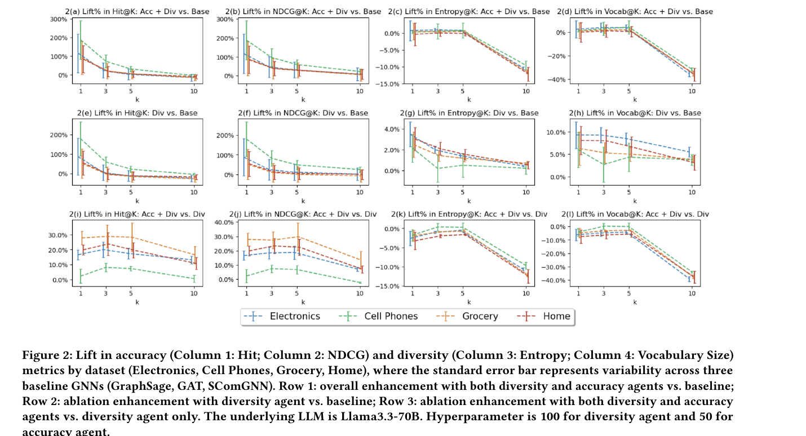
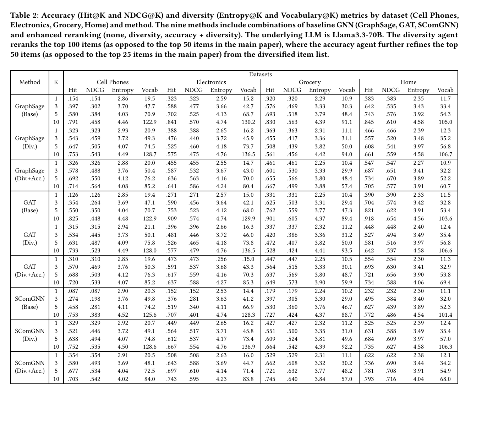

LLM-Enhanced Reranking for Complementary Product Recommendation
1. 基本信息
- 标题：LLM-Enhanced Reranking for Complementary Product Recommendation
- 作者：Zekun Xu, Yudi Zhang
- 机构：North Carolina State University, Iowa State University
- 时间：2025-07-22（arXiv v1）
- 会议：GenAIRecP@KDD 2025
- arXiv：https://arxiv.org/abs/2507.16237
- 本地 PDF：
C:\Users\chaol\Desktop\推荐论文阅读\re-ranking\LLM-Enhanced-Reranking-for-Complementary-Product-Recommendation.pdf - 笔记位置：
论文笔记/重排/LLM重排/LLM-Enhanced-Reranking-for-Complementary-Product-Recommendation.md - 分类：重排 / LLM 重排 / 互补商品推荐
2. Vault 内相关论文/笔记
-
推荐系统重排最新进展：综述把本文放在 LLM 辅助重排路线中，适合用来理解“直接让 LLM 后处理候选列表”与传统重排、生成式重排之间的差异。
-
已检查现有重排论文笔记：本文没有直接引用、对比或继承 CMR 和 AgenticRecTune。CMR 是可控多目标重排模型，AgenticRecTune 是线上系统配置优化 agent；本文是互补商品场景下的 prompt-based LLM reranking。因此这里不建立论文级双向链接。
3. 一句话总结
本文把 LLM 放在互补商品推荐的最后重排层：先用任意 GNN 推荐模型取回 top-K 候选，再用 diversity agent 扩展候选类型覆盖，最后用 accuracy agent 精修前部列表，从而在不改模型结构、不重训 GNN 的情况下改善 accuracy-diversity tradeoff。
4. 问题背景
互补商品推荐关注的是“买来一起用”的商品组合，例如相机和镜头、打印机和墨盒。它和相似商品推荐不同：相似商品可以依赖外观、品类或替代关系，互补关系更依赖使用场景、功能搭配和用户意图。
论文认为 GNN 已经是互补商品推荐里的强路线。商品被表示为图中的节点，边表示互补关系，GNN 通过邻居聚合学习结构和语义互补模式。但 GNN 的典型问题是：高连接度、热门商品更容易被推荐，长尾商品和新颖搭配容易被压制。这会提高短期准确率，却降低推荐列表的 novelty 和 diversity。
LLM 的价值被放在这个矛盾上。作者没有把 LLM 当成图数据增强器，而是把它放在 GNN 输出之后做 reranking。这样做有两个动机：
- LLM 能从商品标题、描述和常识中识别更深层的功能互补关系，可能发现图结构里不明显的搭配。
- 直接重排候选列表不需要修改底层 GNN，也不需要重新训练，所以更接近 model-agnostic 后处理。
这个定位和已有 LLM+推荐工作不同。论文指出，很多互补商品方向的 LLM 方法是用 LLM 改写描述、补全特征或增强图关系，然后再训练下游模型；问题是重训成本高，而且 LLM 增强信息是否真的传到最终输出取决于模型架构。本文则让 LLM 直接作用在输出排序上。
5. 相关工作位置
论文把互补商品推荐追溯到 McAuley 等人的 link prediction 形式化：给定商品对，判断它们是否存在互补关系。后续方法包括 ENCORE、Linked VAE、P-Companion、Decoupled GCN、GAT、DAEMON、Decoupled Hyperbolic GAT、Dynamic Policy Network、GAN 和 spectral GNN。
生成式 AI 之后，相关工作主要有两类：
- 输入增强：用 LLM 改写不完整描述、丰富图特征或提供 side information。这类方法需要重训下游模型。
- 直接重排：在其它推荐或排序场景中，用 LLM prompt 做 reranking。本文声称自己的贡献是把这条路线第一次适配到 complementary product recommendation，并重点处理 accuracy-diversity tradeoff。
6. 问题形式化
论文沿用互补商品图的设定：
其中 是商品节点集合， 是每个节点的 维特征向量， 是无向边集合，边表示两个商品之间存在互补关系。任务是给定两个商品 和 ，预测边 的概率。
这里的关键是：本文并不重新定义推荐模型，而是把任何能对商品对输出互补相关性分数的模型都看成 baseline retriever。
7. 方法
7.1 Baseline retriever
论文把底层模型写成：
它接收两个商品特征向量，输出一个 relevance score，表示这两个商品存在互补关系的可能性。这个模型可以是 GraphSAGE、GAT、SComGNN 或其它图推荐模型。
在本文框架里， 的角色只是 retriever：从很大的候选池里先筛出 top-K，例如主实验中是 top 50。这个设定有一个隐藏条件：LLM 只能重排已经被召回的候选，不能凭空补回 retriever 没有召回的正确商品。因此最终效果的上界仍然受 baseline retriever 的 recall 限制。
7.2 Diversity agent
作者把 LLM-enhanced reranking 拆成两个 subflow。第一步是 diversity agent，它接收 baseline retriever 的候选列表，目标是从多样性角度改善排序。
diversity agent 的 prompt 结构包括四部分：
- Input format：给定 query 商品的标题，以及候选商品列表。每个候选只有
ID和title。 - Task definition：要求判断候选是否与给定商品互补，互补被定义为“可能同时购买或同时使用，但不是直接替代品”。
- Few-shot examples：例如 iPhone case 是 iPhone 的配件；speaker cables 和 speaker stands 可以是同一产品的配件；bowl 和 plate 可用于同一活动。
- Ranking instructions：要求按互补可能性重排候选，同时关注 diversity，让列表前部包含更多不同
genre的商品。这里的genre是 prompt 原文用词，在电商互补商品语境里应理解为商品类型/类别覆盖，而不是电影、音乐那种狭义 genre。
输出格式被强约束为只返回候选 ID 序列，例如 [1, 4, 3, 0, 2]。这个限制很重要：LLM 不生成商品名称，也不输出推理过程，只给出排列。它降低了格式错误和 hallucination 风险，也保证后处理系统可以把 LLM 输出直接映射回候选集合。
diversity agent 的设计直觉是：GNN 已经提供了“可能相关”的候选集合，但它可能偏向热门、同质或高连接商品。LLM 在候选集合内部重新排列时，可以利用商品标题里的语义和常识，把不同类型但仍互补的候选提前。
7.3 Accuracy agent
第二步是 accuracy agent。它接收 diversity agent 产出的列表前部子集，例如主实验中从 diversified top 50 中取 top 25，再用几乎相同的 prompt 结构做精修。唯一主要区别在 ranking instruction：从“关注 diversity”改成“关注 accuracy，选择最精确、最正确互补的商品”。
这一步体现了论文的核心 tradeoff：先用 diversity agent 拉开候选类型覆盖，再用 accuracy agent 把最可能正确的互补商品推到前面。它不是一个多轮协作系统，而是固定的一次顺序交互：
这个顺序不能随便反过来。若先让 accuracy agent 贪心强化相关性，列表前部可能更快收缩到热门或同类商品，后面的 diversity agent 很难在不牺牲前部准确率的情况下重新打开覆盖。本文的实验也显示 accuracy agent 在 diversity agent 之后继续提升准确率，但会损失一部分 diversity。
8. 实验设置
实验使用 Amazon product review data 的四个品类：Electronics、Cell Phones、Grocery 和 Home。baseline retriever 有三个 GNN：
- GraphSAGE
- GAT
- SComGNN
所有 GNN 都在同一组商品图上训练，节点特征只包含多级商品类别和价格；但传给 LLM agent 的 reranking 输入主要是 query 商品标题和候选商品 title，而不是 GNN 的数值特征。LLM 使用 Llama3.3-70B。主实验中 diversity agent 重排每个 GNN 取回的 top 50，accuracy agent 再精修 diversity-enhanced list 的 top 25。补充实验把这两个超参数改成 100 和 50。
指标分两组：
- Accuracy：Hit@K 和 NDCG@K。
- Diversity：推荐商品标题里的 vocabulary size，以及 token 分布熵：
这里 是第 个 token 在推荐输出中出现的概率， 是不同 token 的总数。这个 diversity 指标有一个局限：它度量的是标题词汇多样性，而不是严格的商品功能、品牌、品类或用户感知多样性。因此它能作为 exploratory metric，但不能完全代表真实业务里的列表多样性。
9. 主结果
9.1 Figure 1：两阶段 agent 的整体提升与消融

Figure 1 是主结果的 lift 图。四列分别是 Hit、NDCG、Entropy、Vocabulary Size；标准误差条表示三个 baseline GNN 之间的变动；三行分别回答三个问题：
- Row 1：diversity + accuracy 两个 agent 相比 baseline GNN 的整体提升。
- Row 2：只用 diversity agent 相比 baseline 的提升。
- Row 3：在 diversity agent 之后加入 accuracy agent 的额外增量。
Row 1 显示，在 时 accuracy lift 最明显：Cell Phones 接近 200%，Electronics 约 100%，Home 和 Grocery 约 50%。作者解释 Cell Phones 的 lift 更大，主要因为 baseline GNN accuracy 更低，所以相对提升空间更大。随着 增大，accuracy lift 下降，说明 LLM 重排最主要改善的是列表最前部。
diversity 指标的结果更能说明 tradeoff。Row 1 在 时 entropy 平均提升超过 2%，vocabulary size 平均提升超过 5%；但当 增大，diversity lift 可能变负。这说明两阶段 LLM 重排能让 top item 更准、更有变化，但当观察更长列表时，accuracy agent 的精修会把一部分 diversity 消耗掉。
Row 2 是本文最值得记的证据：只用 diversity agent 时，它不只是提升 diversity，也在小 上显著提升 Hit/NDCG。作者据此认为，LLM 的语义理解能在 baseline 候选中找出更合适的互补关系，而不是只做“牺牲准确率换多样性”的后处理。
Row 3 则说明 accuracy agent 的作用更符合预期：它继续提高 Hit/NDCG，平均至少有 5% 增益，但 entropy 和 vocabulary size 下降。论文明确把这解释为 accuracy-diversity tradeoff：进一步提高排序准确率没有 free lunch，需要付出多样性代价。
9.2 Table 1：主实验原始指标

Table 1 给出主实验的原始数值，能看到 lift 图背后的具体变化。
几个具体例子：
- GraphSAGE 在 Cell Phones 上，Hit@1 从 base 的 0.154 提升到 Div. 的 0.306，再到 Div.+Acc. 的 0.351；NDCG@1 同步从 0.154 到 0.351。
- GAT 在 Electronics 上，Hit@1 从 0.271 提升到 Div. 的 0.425，再到 Div.+Acc. 的 0.494。
- SComGNN 在 Home 上，Hit@1 从 0.232 提升到 Div. 的 0.525，再到 Div.+Acc. 的 0.580。
这说明方法不是只对某一个 GNN 有效，而是在三个 baseline 上都能改善前部排序。但表里也能看到 diversity 的下降：例如 GraphSAGE 在 Home 的 Vocab@10 从 base 的 105.0 变成 Div. 的 106.8，再被 Div.+Acc. 拉回 94.6。也就是说，diversity agent 可以增加覆盖，但 accuracy agent 会把列表重新集中到更“准”的候选上。
10. Agent 超参数消融
10.1 Figure 2：100/50 设置下趋势保持

Figure 2 把 diversity agent 的候选深度从 50 增到 100，把 accuracy agent 的输入从 25 增到 50。整体结构和 Figure 1 相同。
结论基本保持：diversity agent 仍能同时改善小 的 accuracy 和 diversity；accuracy agent 仍能进一步提升 accuracy，但带来 diversity 下降。比较重要的变化是，在更深候选列表下，Row 1 的 Vocabulary@K 在 附近下降更明显。这提示一个实现层面的 tradeoff：让 LLM 看更多候选可能增加可选空间，但最终 accuracy-focused 精修仍会压缩长列表的文本多样性。
10.2 Table 2：补充实验原始指标

Table 2 是 100/50 超参数设置下的完整数值。它不是提出新结论，而是验证主结论对候选深度不敏感：LLM reranking 的主要收益仍集中在前部 accuracy，diversity agent 仍是同时提升小 accuracy 和 diversity 的关键组件。
从方法理解上看，100/50 设置也强化了一个边界条件：LLM 的 reranking 成本会随候选数增加。论文没有展开延迟和成本评估，因此这个方法更像高价值、候选量较小、语义关系强的电商场景后处理，而不是可以直接套到大规模 feed top-100 的通用在线重排器。
11. 结论与局限
论文结论是：LLM-enhanced reranking 能在互补商品推荐中改善 accuracy-diversity tradeoff。更细地说，diversity agent 可以在 baseline GNN 输出之上同时提升准确率和多样性；accuracy agent 可以继续提升准确率，但会降低多样性。
作者把当前方法称为 multi-agent system 的一个特殊情况，因为 diversity agent 和 accuracy agent 只交互一次。未来工作计划扩展成迭代式多 agent 协作，让 agent 多轮交互并互相学习。
需要记住的限制：
- 召回上界：LLM 只能重排 retriever 召回的候选，不能解决底层召回漏掉正确互补商品的问题。
- 输入信息有限：实验 prompt 主要使用商品 title，是否能处理标题稀疏、噪声大或强个性化场景还不明确。
- 多样性指标较弱：entropy 和 vocabulary size 是标题文本多样性的 proxy，不等于真实用户感知多样性。
- 缺少线上约束：论文没有报告 Llama3.3-70B reranking 的延迟、成本、稳定性和格式失败率。
- 不是端到端学习：agent 的行为来自 prompt，不会从实验反馈中更新；作者也承认未来要做多轮 agent 协作。
12. 记忆锚点
- 本文不是训练新的互补商品 GNN，而是在 GNN 输出之后做 LLM 后处理。
- 方法顺序是
baseline GNN top-K -> diversity agent -> accuracy agent。 - diversity agent 的关键作用不是单纯“增加品类”，而是在小 上同时改善 Hit/NDCG 和文本多样性。
- accuracy agent 负责把前部候选再压准，但会消耗 diversity，这是论文保留的核心 tradeoff。
- 适用场景更像“高语义、高价值、候选量有限的电商互补推荐”，而不是无成本通用重排层。
- 与 CMR 的区别：CMR 学一个可控多目标重排模型；本文不训练重排模型，只用 LLM prompt 调整已有候选列表。
13. 图表覆盖检查
- 方法设计：本文无独立架构图；两阶段
GNN retriever -> diversity agent -> accuracy agent流程已在方法章节解释。 - 主结果：Figure 1 和 Table 1 已解释并嵌入，覆盖整体 lift 与原始指标。
- 消融/超参数：Figure 2 和 Table 2 已解释并嵌入，覆盖 100/50 设置下的趋势稳定性。
- 成本风险：论文未报告延迟、成本、格式失败率，已在局限中标出。